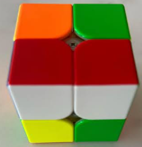
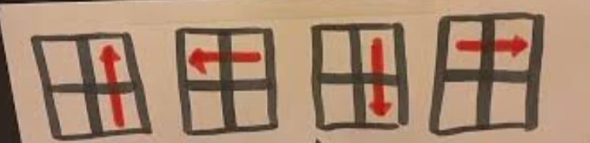

Believe it or not, the 2x2 was not invented by Erno Rubik. It was made 2 years before the 3x3 cube by Larry D. Nichols. In fact, Larry attempted to sue Erno Rubik for patent infringement, but the case was dismissed because his patent used magnets unlike the Rubik's Cube.
The 2x2 is far easier to solve than the 3x3,
however, it can still be challenging with 3,674,160 possible combinations.
First, you will want to solve the first layer of the cube. However, in order to understand this tutorial, you will need to understand the notation of the cube.

Even though this image depicts a 3x3 cube it still describes the notation as is required
You will also want to be able to recognize that every color on the cube is not one single color but instead part of a piece that cannot be seperated from the other on that piece.
For example, a corner piece with red, green and white on it will always have those three colors and those colors will always be together. This is incredibly important to understand
when solving the cube because this is almost required understand to solve the cube.
Once you understand this we can finally begin to solve a 2x2 cube.
Solving the First Layer
First, you will want to recognize all of the white corners of the cube which means on a 2x2 cube, you will have 4 white corners to identify.once you recognize a corner look at the other colors on that piece then look for another white corner that shares either of those colors. Then try to match the white so that the white is on the same side and that the color that both corners share are also on the same side. This creates a bar

Once you have created a bar, you will want to find the other two white corners and try to match them up with the bar. Once you have done this, you will have completed the first layer of the cube.
However, this will be difficult to do without breaking the bar. To do this, you will need to use a simple algorithm to move the other two corners into place without breaking the bar. The algorithm is as follows:

First, you must move the piece you want to insert above the slot where it belongs. Then you must make sure that the piece is in the top right corner facing you before doing the algorithm.
If the piece is in the first layer you can use this algorithm to pull it out when the piece is in the bottom right corner. Make sure to insert the piece that the white match with the other whites and that the color on the side matches with the white piece next to it.
You may need to repeat the algorithm several times for the corners to be properly oriented.
Congratulations! You have successfully finished the first layer of the 2x2 cube.